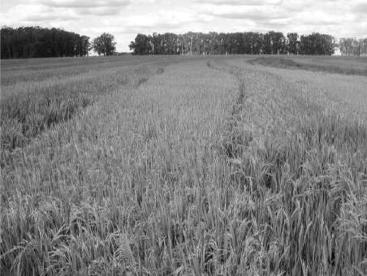

Plant ch 01
HARUG! 2023-01-11
Spatial Data in R

Outline
- Ch 01:
- Overview
- The datasets
Spatial data advancements
Increase in sensors, increase in available data
Statistical methods and software
So-called
spatial datasubtleties, but basically geolocated, x and y coordinates
CRS (Coordinate Reference System[s])
Sensors and satellites
Special problems
Statistical properties of spatial data
Spatial data has a lot of data points, so
poweris large even fortiny effect sizes, thus the Null is always rejected (even if practically meaningless)Spatial data points near each other are almost never
independent, violating the common assumption that they are (a/k/aspatial autocorrelation)
Special problems
Ecological properties of spatial data
Low ‘ecological resolution’
High ‘data resolution’
Complex relationships
(next slide shows Soil moisture, Veg reflectance, Yield…)
Special problems
Cressie’s classification
Geo-statistical data x-y point data with a continuous measure (like soil moisture). Extrapolation between measured points is a goal.
Areal data points or polygons representing a uniform unit of measure (like the crop planted within a field boundary)
Point pattern data what is the spatial pattern (like whether pest outbreaks are random or spatially explained by some feature)
Geostatistical versus Areal

Components of spatial data
Spatial component (x-y)
Attribute component (something measured or classified)
Scale and sample size (for measuring earthworms, is 1m or 1000m better to sample?)
Vector data versus Raster data
Dataset 1
Yellow billed cuckoo habitat

Dataset 1
What spatial featured are associated with presence in this species? (Data has shapes and attributes)

Dataset 2
Oak woodland habitat characteristics
Dataset 2
Why does young oak “recruitment” vary?
Data are rows and columns with x-y coords
Infer where habitat is suitable for oak population growth.
Dataset 3
Rice farming, flooding and crop rotation

Dataset 3
Spatial orientation of fields
Yield, different farmers
What factors affect yield (e.g. why do some farmers do better than others?)
Dataset 4
Spatial comparison of yield in 2 fields with identical management and crop history
Precision agriculture
What factors affect within-field variation in yield?